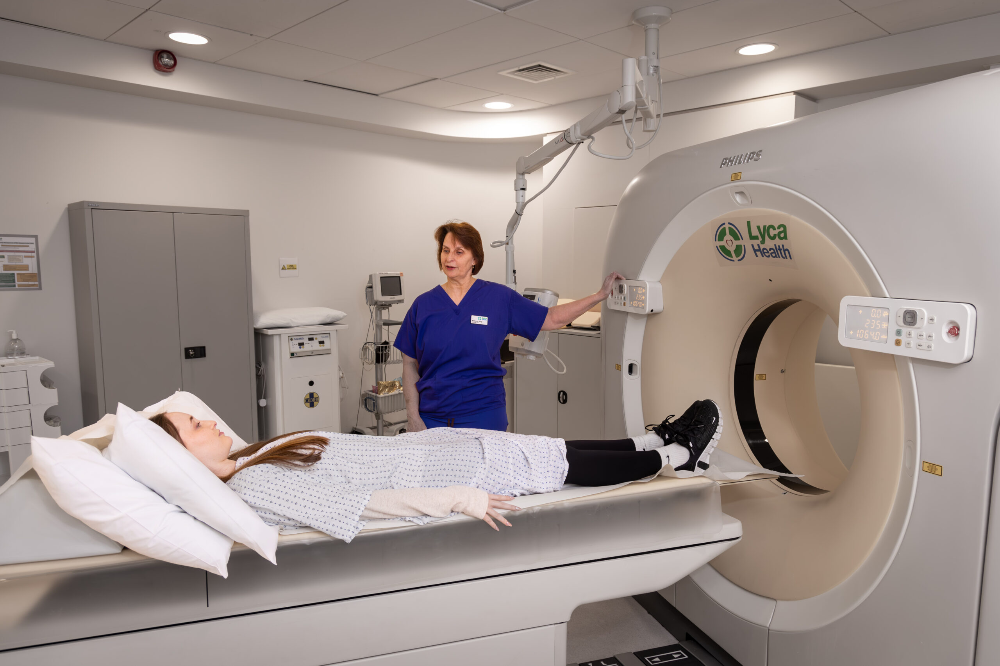

01
高端慢病管理
针对高血压、糖尿病、心血管疾病等慢性疾病，由专属私人医生制定个性化管理方案，结合英国顶级专科医生定期会诊，实现慢病精准管控。
- 专属私人医生1对1管理
- 个性化用药与生活方式方案
- 英国专科医生定期远程会诊
- 全年健康数据追踪与调整

02
皇家家庭私人医生
借鉴英国皇室私人医生模式，为您的家庭配备专属私人医生，提供7×24小时健康守护、就医协调、预防保健等全方位服务。
- 英国皇室私人医生模式
- 7×24小时健康守护
- 全家健康管理覆盖
- 优先对接顶级医疗资源

03
个性化体检定制
根据个人健康史、家族病史及生活方式，由英国顶级全科医生量身定制体检方案，并提供详细的体检报告解读与健康规划建议。
- 英国全科医生定制方案
- 深度健康风险评估
- 体检报告专业解读
- 后续健康管理规划
04
留学生健康管家
专为在英中国留学生打造，提供日常健康咨询、就医陪同、紧急医疗协调等服务，解决异国求医的语言与文化障碍。
- NHS就医全程导航
- 华人执业医生翻译陪同
- 紧急医疗快速响应
- 心理健康支持
05
赴英看病
为需要赴英就医的客户提供全程服务，包括医生匹配、医院预约、签证协助、行程安排、在地陪同翻译等，让您安心赴英。
- 精准医生与医院匹配
- 签证与行程全程协助
- 华人执业医生陪同翻译
- 治疗后的康复跟踪
06
远程问诊
足不出户即可与英国顶级医生进行视频问诊。所有医学翻译由当地执业华人医生担任，确保沟通精准无障碍。
- 英国顶级医生视频问诊
- 执业华人医生专业翻译
- 病历整理与诊断报告
- 后续治疗方案跟进